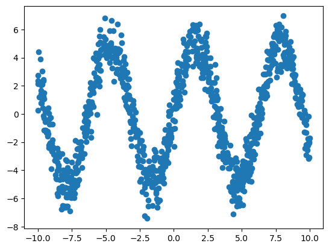
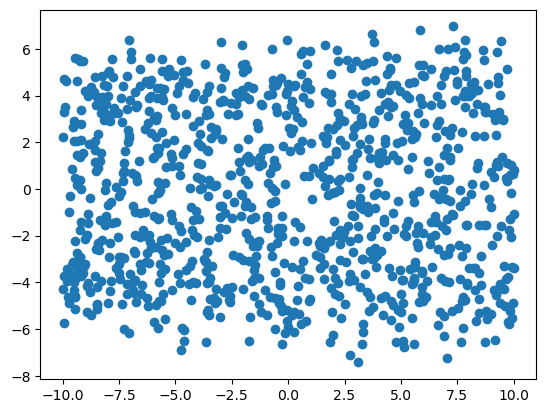
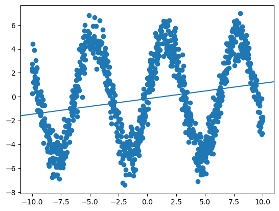
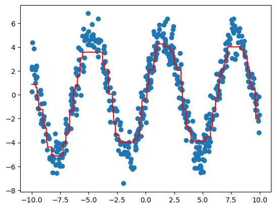
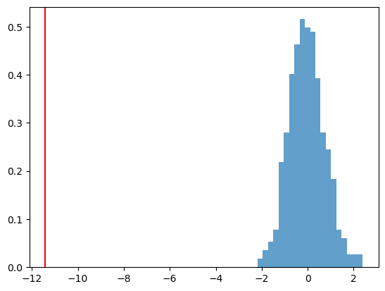
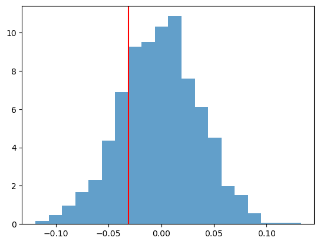
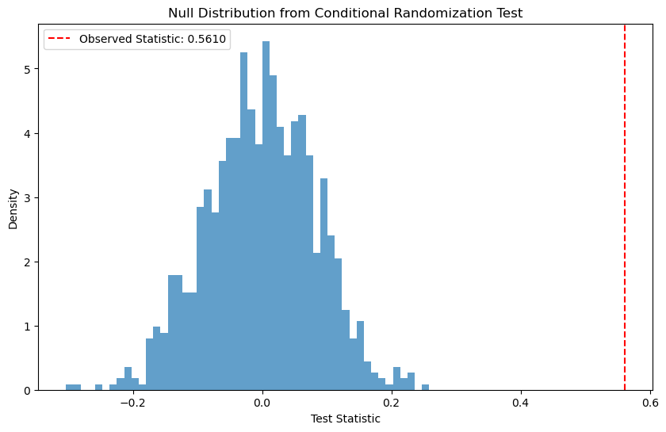
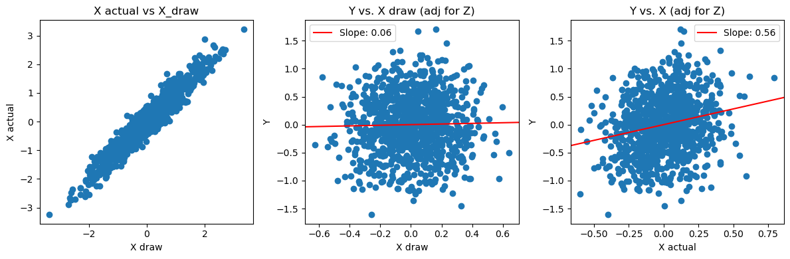

import numpy as np
import matplotlib.pyplot as plt
import scipy
from scipy.stats import t
from sklearn.linear_model import LinearRegression
import pandas as pd
import xgboost as xgb
import matplotlib.pyplot as plt
import numpy as np
from sklearn.preprocessing import StandardScaler
from typing import Callable, Tuple
from tqdm import tqdm
from sklearn import datasets, linear_model
import statsmodels.api as sm
from scipy import statsLecture 11 - Conditional Tests
Variable Exclusion Test
Let’s consider a nonlinear regression problem. Our data is (y_i, x_{i1},x_{i2},\dots, x_{ip}), i=1,\dots, n.
The true model is:
y_i = 5\sin(x_{i1}) + \varepsilon_i, \quad \varepsilon_i\sim t_{100}.
That is, only one of the p predictors is important for predicting y.
n = 1000
p = 50
x = np.random.uniform(-10,10, size=(n, p))
y = 5 * np.sin(x[:, 0]) + t.rvs(100, size=n)Here is the plot of y_i vs. x_{i1}.
plt.scatter(x[:, 0], y)
Here is the plot of y_i vs. x_{i2} (which has no relationship!)
plt.scatter(x[:, 1], y)
Let’s fit a linear regression to this data.
lm = LinearRegression()
lm.fit(x, y)
y_hat = lm.predict(x)
resid = y - y_hatOur coefficients are very small, as we may expect (fitting a linear function to nonlinear data).
print('Intercept:', round(lm.intercept_, 3),'\n', 'Slope:', round(lm.coef_[0],3))Intercept: -0.183
Slope: 0.13plt.scatter(x[:,0], y)
plt.axline((0,lm.intercept_), slope=lm.coef_[0])
Let’s train a nonlinear model instead (gradient boosted trees, XGBoost).
n_train = int(n/2)
x_train = x[:n_train]
x_test = x[n_train:]
y_train = y[:n_train]
y_test = y[n_train:]dtrain = xgb.DMatrix(x_train, label=y_train)
dtest = xgb.DMatrix(x_test, label=y_test)
params = {
'max_depth': 3,
'eta': 0.3,
'objective': 'reg:squarederror',
'eval_metric': 'rmse',
'nthread': 4
}
# Train the model (suppress training output)
num_rounds = 100
eval_list = [(dtrain, 'train'), (dtest, 'eval')]
model_with = xgb.train(params, dtrain, num_rounds, eval_list, early_stopping_rounds=10, verbose_eval=False)/Users/gm845/anaconda3/envs/msds534/lib/python3.13/site-packages/xgboost/core.py:726: FutureWarning: Pass `evals` as keyword args.
warnings.warn(msg, FutureWarning)# make predictions
y_pred_with = model_with.predict(dtest)
# z
resid_with = np.power(y_test - y_pred_with, 2)n_lin = 1000
x_linspace = np.linspace(x_train.min(), x_train.max(), n_lin).reshape(n_lin, 1)
x_linspace = np.hstack((x_linspace, np.zeros((n_lin, p-1))))
y_linspace = model_with.predict(xgb.DMatrix(x_linspace))
plt.scatter(x_test[:, 0], y_test)
plt.plot(x_linspace[:, 0], y_linspace, c='red')
We will conduct a “Variable Exclusion Test” to test the contribution of x_{i1} in predicting y_i.
Our null hypothesis is:
H_0: \mathbb{E}[y_i|x_{i1},\dots, x_{ip}] = \mathbb{E}[y_i|x_{i2},x_{i3},\dots,x_{ip}]
On the training data, we train two models:
- f(x_{i1},x_{i2},\dots, x_{ip}) to predict y_i
- g(x_{i2}, x_{i3},\dots, x_{ip}) to predict y_i
For each i, we calculate:
- z_i = y_i - f(x_{i1},x_{i2},\dots, x_{ip})
- \widetilde{z}_i = y_i - g(x_{i2},x_{i3},\dots, x_{ip})
Our test-statistic is: T_{obs} = \frac{1}{n}\sum_{i=1}^n (z_i - \widetilde{z}_i)
To get the null distribution of T, for b=1,\dots, B:
- Swap z_i and \widetilde{z}_i with probability 0.5. This gives z_{i}^{(b)} and \widetilde{z}_i^{(b)}
- Calculate T^{(b)}=\frac{1}{n}\sum_{i=1}^n (z_i^{(b)} - \widetilde{z}_i^{b})
The p-value is:
p-\text{value} = \frac{1}{B}\sum_{b=1}^B I(T^{(b)} \leq T_{obs})
# we have trained f already
# now train g
dtrain = xgb.DMatrix(x_train[:, range(1, p)], label=y_train)
dtest = xgb.DMatrix(x_test[:, range(1, p)], label=y_test)
params = {
'max_depth': 3,
'eta': 0.3,
'objective': 'reg:squarederror',
'eval_metric': 'rmse',
'nthread': 4
}
# Train the model
num_rounds = 100
eval_list = [(dtrain, 'train'), (dtest, 'eval')]
model_without = xgb.train(params, dtrain, num_rounds, eval_list, early_stopping_rounds=10,verbose_eval=False)y_pred_without = model_without.predict(dtest)
# ~z
resid_without = np.power(y_pred_without - y_test, 2)n_test = y_test.shape[0]print(f"Mean Test Errors: {resid_with.mean():.4f}")
print(f"Mean Null Test Errors: {resid_without.mean():.4f}")
obs_T = resid_with.mean() - resid_without.mean()Mean Test Errors: 1.3923
Mean Null Test Errors: 12.8082# get columns Z | Z_tilde
resid_all = np.hstack((resid_with.reshape(n_test, 1), resid_without.reshape(n_test, 1)))n_permutations = 500
resampled_Ts = []
for _ in range(n_permutations):
heads = np.random.choice(np.array((0,1)), size=n_test)
resamp_with = resid_all[range(n_test), heads]
resamp_without = resid_all[range(n_test), 1-heads]
# test error using X - test error not using X
resampled_T = np.mean(resamp_with) - np.mean(resamp_without)
resampled_Ts.append(resampled_T)
## Calculate p-value
p_value = sum([1 for t in resampled_Ts if t <= obs_T]) / n_permutationsresampled_Ts = np.array(resampled_Ts)
plt.hist(resampled_Ts, bins=20 ,density=True, alpha=0.7)
plt.axvline(obs_T, color='red')
plt.show()
print(f"P-Value: {p_value:.4f}")
P-Value: 0.0000We reject the null hypothesis.
Now let’s do the test for x_{i2}, which we know has no relationship with y_i.
j = 1
x_js = np.array([i for i in range(p) if i != j])x_jsarray([ 0, 2, 3, 4, 5, 6, 7, 8, 9, 10, 11, 12, 13, 14, 15, 16, 17,
18, 19, 20, 21, 22, 23, 24, 25, 26, 27, 28, 29, 30, 31, 32, 33, 34,
35, 36, 37, 38, 39, 40, 41, 42, 43, 44, 45, 46, 47, 48, 49])dtrain = xgb.DMatrix(x_train[:, x_js], label=y_train)
dtest = xgb.DMatrix(x_test[:, x_js], label=y_test)
params = {
'max_depth': 3,
'eta': 0.3,
'objective': 'reg:squarederror',
'eval_metric': 'rmse',
'nthread': 4
}
# Train the model
num_rounds = 100
eval_list = [(dtrain, 'train'), (dtest, 'eval')]
model_without = xgb.train(params, dtrain, num_rounds, eval_list, early_stopping_rounds=10,verbose_eval=False)
y_pred_without = model_without.predict(dtest)
resid_without = np.power(y_pred_without - y_test, 2)print(f"Mean Test Errors: {resid_with.mean():.4f}")
print(f"Mean Null Test Errors: {resid_without.mean():.4f}")
obs_T = resid_with.mean() - resid_without.mean()Mean Test Errors: 1.3923
Mean Null Test Errors: 1.4237resid_all = np.hstack((resid_with.reshape(n_test, 1), resid_without.reshape(n_test, 1)))
n_permutations = 1000
resampled_Ts = []
for _ in range(n_permutations):
heads = np.random.choice(np.array((0,1)), size=n_test)
resamp_with = resid_all[range(n_test), heads]
resamp_without = resid_all[range(n_test), 1-heads]
# test error using X - test error not using X
resampled_T = np.mean(resamp_with) - np.mean(resamp_without)
resampled_Ts.append(resampled_T)
## Calculate p-value
p_value = sum([1 for t in resampled_Ts if t <= obs_T]) / n_permutationsresampled_Ts = np.array(resampled_Ts)
plt.hist(resampled_Ts, bins=20, density=True, alpha=0.7)
plt.axvline(obs_T, color='red')
plt.show()
print(f"P-Value: {p_value:.4f}")
P-Value: 0.2110We do not reject the null hypothesis (as expected).
Conditional Randomization Test
We generate a new dataset:
Z_{i1} \sim N(0, 1), Z_{i2}\sim N(0,1)
X_i = Z_{i1} + N(0, 0.1^2)
Y_i = 0.4 X_{i} + 0.4 Z_{i2} + N(0, 0.5^2)
- X_i is correlated with Z_{i1}.
- Only X_i and Z_{i2} are predictive of Y_i
# Generate example data
np.random.seed(42)
n_samples = 1000
# Generate confounding variable Z
Z = np.random.normal(0, 1, (n_samples, 2))
# Generate X with dependence on Z
x_sd = 0.2
X = Z[:, 0] + np.random.normal(0, x_sd, n_samples)
# Generate Y with dependence on both X and Z
# X, Z1, Z2
Y = 0.5 * X + 0.5 * Z[:, 1] + np.random.normal(0, 0.5, n_samples)We run a linear regression and obtain estimates of our coefficients for X, Z_1 and Z_2.
We also conduct a t-test for each variable - as expected, we see for X, Z_2 we reject the null that the coefficient is zero. For Z_1 we retain the null hypothesis.
dat = np.hstack((X.reshape(-1,1), Z))
est = sm.OLS(Y, dat)
est2 = est.fit()
print(est2.summary()) OLS Regression Results
=======================================================================================
Dep. Variable: y R-squared (uncentered): 0.642
Model: OLS Adj. R-squared (uncentered): 0.641
Method: Least Squares F-statistic: 596.5
Date: Tue, 25 Nov 2025 Prob (F-statistic): 6.32e-222
Time: 15:13:12 Log-Likelihood: -750.23
No. Observations: 1000 AIC: 1506.
Df Residuals: 997 BIC: 1521.
Df Model: 3
Covariance Type: nonrobust
==============================================================================
coef std err t P>|t| [0.025 0.975]
------------------------------------------------------------------------------
x1 0.5610 0.083 6.793 0.000 0.399 0.723
x2 -0.0909 0.085 -1.073 0.284 -0.257 0.075
x3 0.4900 0.016 30.675 0.000 0.459 0.521
==============================================================================
Omnibus: 2.779 Durbin-Watson: 2.037
Prob(Omnibus): 0.249 Jarque-Bera (JB): 2.408
Skew: -0.002 Prob(JB): 0.300
Kurtosis: 2.760 Cond. No. 9.95
==============================================================================
Notes:
[1] R² is computed without centering (uncentered) since the model does not contain a constant.
[2] Standard Errors assume that the covariance matrix of the errors is correctly specified.In linear regression, the t-test for H_0:\beta_j=0 is testing whether x_j is independent of y, conditional on (x_1,\dots, x_{j-1}, x_{j+1}, \dots, x_p), if we make assumptions of linearity and Gaussianity.
What if we do not want to make these assumptions? We can conduct a conditional randomization test:
H_0: X_j \text{ ind } Y | X_1,\dots, X_{j-1}, X_{j+1}, \dots X_p
Conditional Randomization Test (Candes et al. 2018)
- On observed data, calculate T_{obs}
- For b=1,\dots, B:
- Draw X_j^{(b)} \sim Q(X_j|X_{\backslash j})
- Calculate T^{(b)} based on Y_i, X_j^{(b)}, X_{\backslash j}
- Calculate p-value:
\frac{1}{B}\sum_{b=1}^B I(T^{(b)} \geq T_{obs})
In this example, we use the true Q(X|Z) distribution. In practice, we do not know this distribution - we generally have to estimate it.
B = 1000
# Compute observed test statistic
observed_stat = est2.params[0]
# Perform sampling
null_stats = np.zeros(B)
for i in tqdm(range(B)):
# sample conditional x
X_draw = np.zeros_like(X)
for j in range(len(X)):
# Draw from conditional distribution
X_draw[j] = Z[j, 0] + np.random.normal(0, x_sd) # this is the true conditional distribution
# Compute test statistic for permuted data
dat = np.hstack((X_draw.reshape(-1,1), Z))
est = sm.OLS(Y, dat)
est2 = est.fit()
null_stats[i] = est2.params[0]
# Compute p-value
p_value = np.mean(np.abs(null_stats) >= np.abs(observed_stat))
100%|██████████| 1000/1000 [00:00<00:00, 1341.46it/s]print("\nConditional Randomization Test Results:")
print(f"Observed Statistic: {observed_stat:.4f}")
print(f"P-value: {p_value:.4f}")
plt.figure(figsize=(10, 6))
plt.hist(null_stats, bins=50, density=True, alpha=0.7)
plt.axvline(observed_stat, color='red', linestyle='--',
label=f'Observed Statistic: {observed_stat:.4f}')
plt.title('Null Distribution from Conditional Randomization Test')
plt.xlabel('Test Statistic')
plt.ylabel('Density')
plt.legend()
plt.show()
Conditional Randomization Test Results:
Observed Statistic: 0.5610
P-value: 0.0000
Bonus visualization:
- the conditional draws X_j^{(b)} are close to actual X_j (as expected)
- the conditional draws X_j^{(b)} are not related to Y, adjusting for Z (as required for the null)
# this is adjusting for z in linear regression
adj_mat = (np.eye(Z.shape[0]) - Z @ (np.linalg.inv(np.transpose(Z) @ Z) @ np.transpose(Z)))
y_adj_z = adj_mat @ Y
x_adj_z = adj_mat @ X
x_draw_adj_z = adj_mat @ X_draw
c1 = LinearRegression().fit(x_draw_adj_z.reshape(-1,1), y_adj_z).coef_[0]
c2 = LinearRegression().fit(x_adj_z.reshape(-1,1), y_adj_z).coef_[0]fig, axes = plt.subplots(1,3, figsize=(12, 4))
axes[0].scatter(X_draw, X)
axes[0].set_xlabel('X draw')
axes[0].set_ylabel('X actual')
axes[0].set_title('X actual vs X_draw')
axes[1].scatter(x_draw_adj_z, y_adj_z)
axes[1].set_xlabel('X draw')
axes[1].set_ylabel('Y')
axes[1].axline((0,0),slope=c1, color='red',label=f'Slope: {c1:.2f}')
axes[1].legend()
axes[1].set_title('Y vs. X draw (adj for Z)')
axes[2].scatter(x_adj_z, y_adj_z)
axes[2].set_xlabel('X actual')
axes[2].set_ylabel('Y')
axes[2].axline((0,0), slope=c2, color='red',label=f'Slope: {c2:.2f}')
axes[2].legend()
axes[2].set_title('Y vs. X (adj for Z)')
plt.tight_layout()